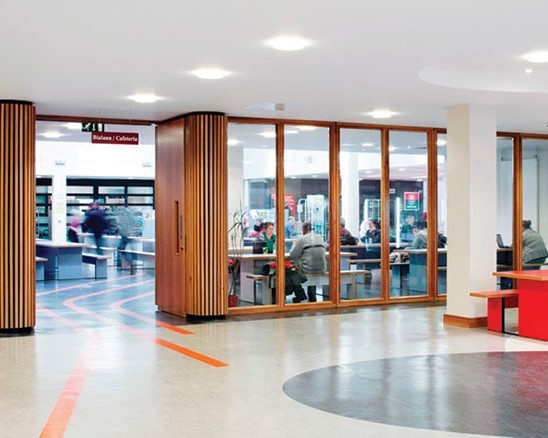
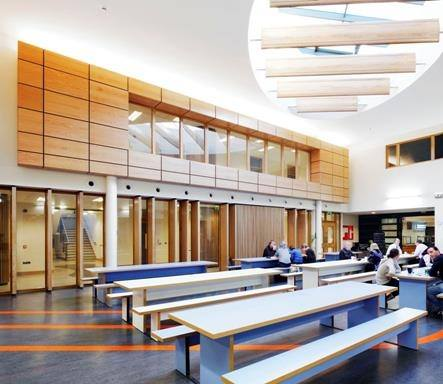

Canteen and Kitchenette
See below to read about ATU's canteen and kitchenette facilities.
Counselling

ATU has a canteen on both the Dublin Road campus and the Wellpark campus, open from 9am-5pm on the weekdays. They provide breakfast in the mornings, a range of pastries or hot foods, you can even make yourself up a full Irish! In the afternoon and into the evening dinners are made and sandwiches too. The dinner menu changes up every day and provides a wide range of options for students.
Prices range depending on the dinners but will be listed on the blackboard every day.
Kitchenette

The kitchenette is open at all times that the college is open to students. It is located next to the canteen, accessed by turning left before the main enterance of the canteen and instead continuing up the hall. It provides a fridge and a microwave for free tea for student use.